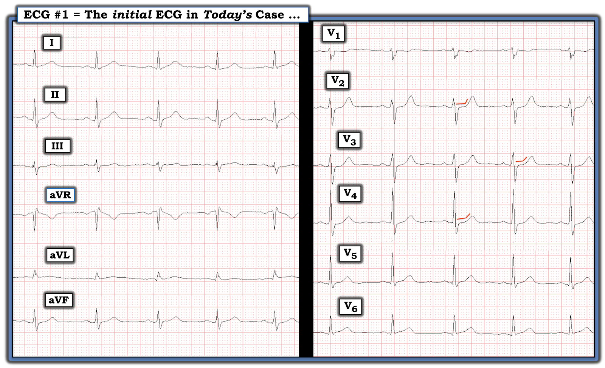
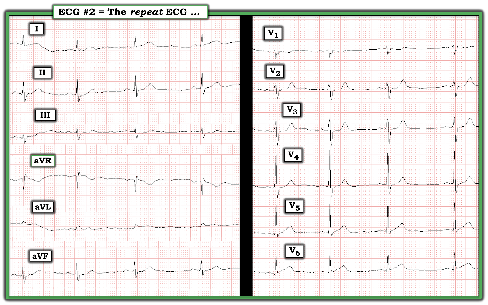
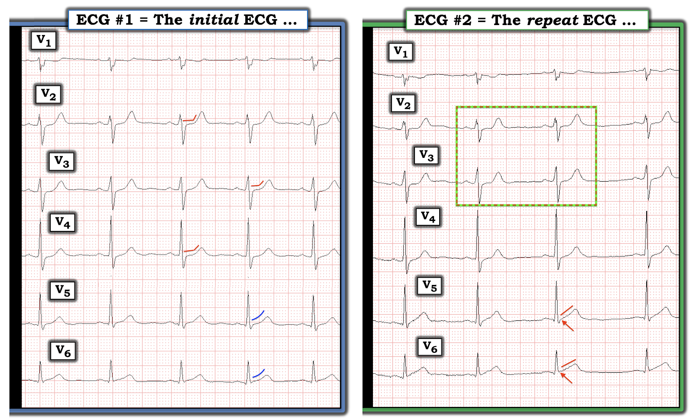
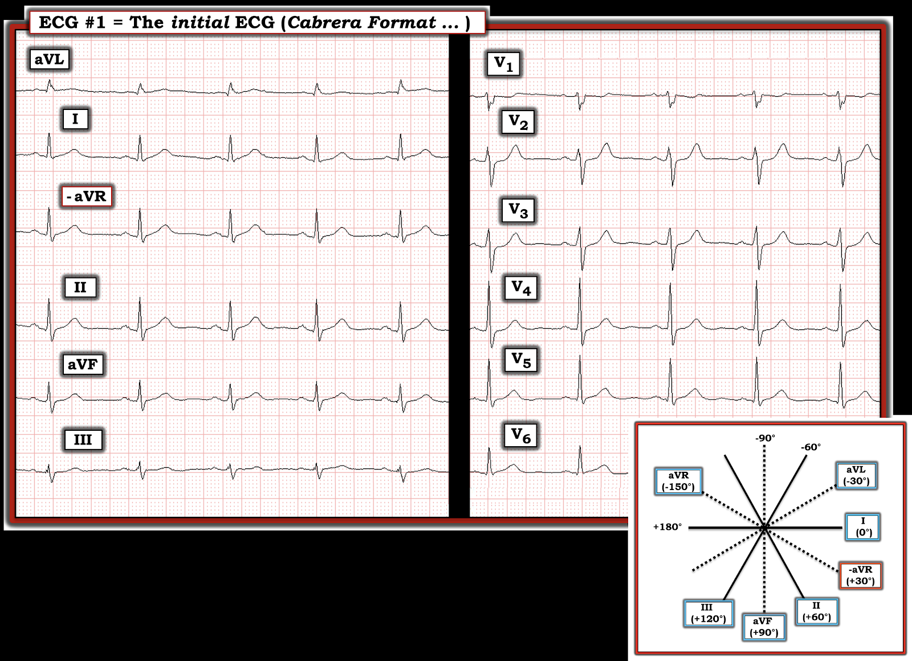
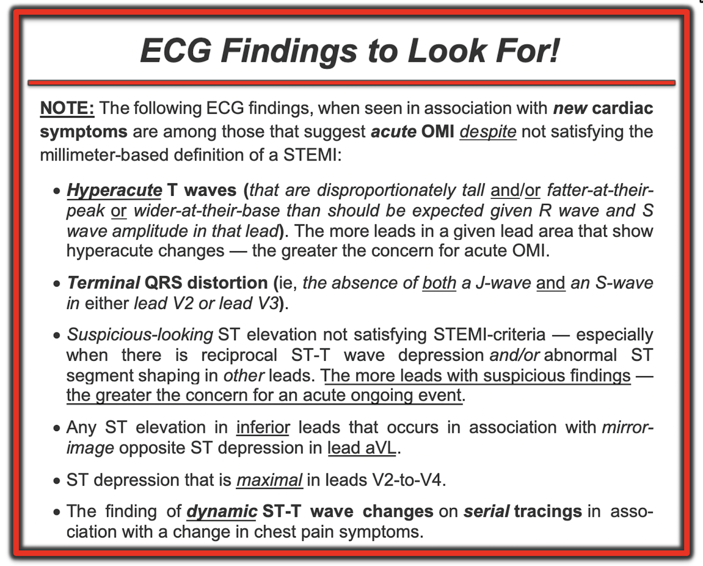

ECG Blog #367 — Bạn có nhận ra dấu hiệu MẤU CHỐT?
Bạn được đưa điện tâm đồ này để đọc lại. Không có bệnh sử — chỉ biết rằng bệnh nhân này được khám tại ED (khoa Cấp cứu – Emergency Department).
CÂU HỎI:
- Điện tâm đồ này có vấn đề tiềm ẩn nào không?

===================================
LƯU Ý: Nhiều người trong chúng ta được giao nhiệm vụ đọc lại các điện tâm đồ đã được những bác sĩ khác diễn giải — thường là không có được nhiều (hoặc chẳng có chút nào) thông tin bệnh sử. Tôi đã làm việc này trong 30 năm — giám sát (tức là "đọc lại" – "overreading") điện tâm đồ của 35 đồng nghiệp lâm sàng.
- Được giao một "chồng" điện tâm đồ để đọc lại mà không có bệnh sử — tôi phải "cân bằng" giữa việc lấy hồ sơ bệnh án (hoặc gọi cho bác sĩ điều trị) cho từng bản ghi (để xem điện tâm đồ có được diễn giải đúng không) — và — giới hạn thời gian của tôi để xử lý xong "chồng" điện tâm đồ hiệu quả nhất có thể, để còn làm các công việc "thường ngày" của mình. Vì vậy — tôi phải chọn lọc xem điện tâm đồ nào tôi cần tìm hiểu thêm.
- Điều này có liên quan đến ca hôm nay — vì điện tâm đồ ở Hình 1 là một bản ghi bắt buộc phải: i) Tìm hiểu bệnh sử là gì (vì ta biết bệnh nhân được khám tại ED — nhiều khả năng nhất là đau ngực có thể mới xuất hiện); và, ii) Lấy hồ sơ bệnh án hoặc gọi cho bác sĩ điều trị để biết đã xử trí lâm sàng những gì.
===================================
SUY NGHĨ CỦA TÔI về điện tâm đồ ở Hình 1:
Ca hôm nay làm nổi bật một dấu hiệu điện tâm đồ tinh tế nhưng then chốt mà quá thường bị bỏ sót. Nó đã bị bỏ sót trong ca hôm nay. Hậu quả là — thông tim (và tái tưới máu cho động mạch LCx bị tắc cấp [ = động mạch mũ trái – Left Circumflex ]) — đã bị trì hoãn 9 giờ, cho đến khi giá trị troponin tăng rất cao cuối cùng mới khiến ca này được chú ý.
- Nhịp ở điện tâm đồ #1 là nhịp xoang. Các khoảng (PR, QRS, QTc) và trục QRS trung bình bình thường. Không có lớn buồng tim (Không hiển thị ở Hình 1 là dấu hiệu của xung chuẩn (standardization mark) bình thường 10 mm = 1 mV).
- Hình dạng ST-T ở các chuyển đạo chi của điện tâm đồ #1 về cơ bản bình thường.
- Ở các chuyển đạo trước tim — tăng tiến sóng R phù hợp, với vùng chuyển tiếp (nơi sóng R trở nên cao hơn độ sâu của sóng S) xuất hiện bình thường giữa chuyển đạo V3 và V4.
Điểm MẤU CHỐT: Các chuyển đạo bất thường trong bản ghi hôm nay là chuyển đạo V2, V3 và V4.
- Bình thường — có một mức ST chênh lên nhỏ, dốc lên thoai thoải ở chuyển đạo V2 và V3. Đây không phải là điều ta thấy ở điện tâm đồ #1. Thay vào đó — hoàn toàn không có ST chênh lên ở V2,V3 — và có ST thẳng đuỗn (straightening) ở đoạn ST tại chuyển đạo V2,V3,V4 (các đường ĐỎ ở chuyển đạo V2,V3,V4 trong Hình 2).
- Ngoài ra — sóng T ở chuyển đạo V2,V3 trông cao hơn mong đợi (so với chiều cao sóng R ở từng chuyển đạo này). Thêm nữa — các sóng T này trông "béo hơn" ở đỉnh và rộng hơn ở đáy so với mức lẽ ra phải có, xét theo biên độ QRS ở các chuyển đạo này.
- XIN NHẤN MẠNH: Đây là những dấu hiệu tinh tế. Nhưng, ở một bệnh nhân đến ED vì đau ngực mới xuất hiện — khi thấy những dấu hiệu tinh tế này khu trú ở chuyển đạo V2 đến V4 thì ít nhất cũng phải khiến bạn nghĩ tới OMI thành sau cấp (nhồi máu cơ tim do tắc – Occlusion-based MI) — cho đến khi chứng minh được điều ngược lại. Biên độ và thể tích tăng của sóng T ở chuyển đạo V2,V3 có thể là sóng T "tái tưới máu".


Ca bệnh HÔM NAY Tiếp diễn:
Một thời gian sau điện tâm đồ #1 — một điện tâm đồ ghi lại được thực hiện ( = điện tâm đồ #2 ở Hình 3).
- BẠN nghĩ sao?


SUY NGHĨ CỦA TÔI về điện tâm đồ ghi lại:
Khó đánh giá các chuyển đạo chi ở điện tâm đồ #2. Lý do là có những gợn sóng nhiễu ở đường nền, khiến hình dạng ST-T thay đổi đôi chút từ nhát này sang nhát khác. Dù vậy — tôi cho rằng có một số thay đổi chắc chắn ở các chuyển đạo trước tim.
- XIN NHẤN MẠNH: Các thay đổi ST-T ở điện tâm đồ #2 (so với điện tâm đồ #1) — rất tinh tế và DỄ bị bỏ qua trừ khi ta so sánh hình dạng ST-T bằng cách xem từng chuyển đạo với nhau, mỗi lần một chuyển đạo. Để thuận tiện cho việc so sánh này — tôi đã đặt các chuyển đạo trước tim của điện tâm đồ #1 và điện tâm đồ #2 cạnh nhau ở Hình 4.


So sánh từng chuyển đạo các chuyển đạo trước tim ở Hình 4:
Để so sánh từng chuyển đạo một cách tối ưu — hình dạng QRS của 2 bản ghi đang được so sánh nên càng giống nhau càng tốt. Lý do là thay đổi đáng kể về hình dạng QRS gợi ý có sự khác biệt nào đó về vị trí đặt điện cực, điều này rõ ràng có thể ảnh hưởng đến hình dạng ST-T.
- Ngoài việc biên độ sóng R tăng nhẹ ở chuyển đạo V4 và V5 của điện tâm đồ #2 — không có khác biệt đáng kể nào về hình dạng QRS giữa 2 bản ghi ở Hình 4. Điều này gợi ý rằng mọi khác biệt về hình dạng ST-T giữa 2 bản ghi này nhiều khả năng phản ánh một khác biệt "thật" do một quá trình thiếu máu cục bộ đang diễn tiến.
- Hãy so sánh hình dạng ST-T của 2 chuyển đạo nằm trong hình chữ nhật ĐỎ-XANH LÁ ở điện tâm đồ #2 — với hình dạng ST-T của chuyển đạo V2,V3 ở điện tâm đồ #1. Chẳng phải đoạn ST ở chuyển đạo V2,V3 của điện tâm đồ #2 trông thẳng hơn, với góc gập rõ hơn giữa điểm kết thúc đoạn ST và điểm bắt đầu nhánh lên của sóng T sao?
- Chẳng phải điểm khởi đầu đoạn ST ở chuyển đạo V5,V6 của điện tâm đồ #2 thẳng hơn trước — so với hình dạng của nó ở chuyển đạo V5,V6 của điện tâm đồ #1 sao? (so sánh các đường ĐỎ với đường XANH DƯƠNG ở các chuyển đạo này).
- Chẳng phải bây giờ cũng có một ít ST chênh lên tại điểm J ở chuyển đạo V5,V6 của điện tâm đồ #2 sao? (các mũi tên ĐỎ ở các chuyển đạo này).
- Điểm MẤU CHỐT: Đáng tiếc là chúng ta thiếu thông tin quan trọng về đối chiếu lâm sàng trong ca hôm nay: i) Chúng ta không biết đã bao lâu trôi qua giữa lúc ghi 2 bản ghi ở Hình 4; ii) Chúng ta không biết có đau ngực hay không (và mức độ nặng tương đối) vào thời điểm ghi mỗi bản ghi (tức là, Đau ngực có tăng lên khi ghi điện tâm đồ #2 không?).
- ĐIỀU CỐT LÕI: Điều chúng ta có biết — là bệnh nhân này đến ED có lẽ vì triệu chứng mới — và các bất thường ST-T tinh tế nhưng có thật thấy ở điện tâm đồ #1 đã tăng lên ở điện tâm đồ #2. Điều này đủ để coi là thay đổi ST-T "động" (dynamic) — và ở một bệnh nhân có đau ngực mới, đây là chỉ định thông tim sớm để xác định giải phẫu mạch vành và bảo đảm tái tưới máu.
- Các thay đổi ST-T mô tả ở trên khu trú ở thành sau (tức là, các thay đổi ST-T ở chuyển đạo V2-V4) — và ở thành bên (các thay đổi ST-T ở chuyển đạo V5,V6 của điện tâm đồ #2) — gợi ý tắc cấp LCx (động mạch mũ trái – Left Circumflex) cho đến khi chứng minh được điều ngược lại.
KẾT LUẬN về Ca Hôm nay:
Các thay đổi ST-T tinh tế nhưng có thật ở bản ghi ban đầu hôm nay — cũng như các thay đổi ST-T "động" cũng tinh tế nhưng có thật không kém thấy ở bản ghi lại — đã không được nhận ra trong 9 giờ. Troponin I tăng tối đa đạt 30,000. Thông tim cho thấy LCx tắc cấp.
- May mắn là — bệnh nhân này hồi phục tốt, và được xuất viện với chức năng thất trái tốt đến bất ngờ. Nhưng có những bài học cần rút ra quan trọng từ ca này!
==========================================
Lời cảm ơn: Tôi xin cảm ơn Magnus Nossen (ở Fredrikstad, Na Uy) đã chia sẻ ca bệnh và bản ghi này.
==========================================

==================================
Các bài ECG Blog liên quan đến ca hôm nay:
- ECG Blog #205 — Ôn lại Cách tiếp cận Hệ thống của tôi trong đọc điện tâm đồ 12 chuyển đạo.
- ECG Blog #193 — minh họa cách dùng Nghiệm pháp soi gương (Mirror Test) giúp nhận ra nhồi máu cơ tim thành sau cấp. Bài này ôn lại những điều cơ bản để dự đoán "Động mạch thủ phạm" — cũng như tầm quan trọng của thuật ngữ "OMI" ( = Occlusion-based MI) như một bước cải tiến so với mô hình STEMI đã lỗi thời.
- ECG Blog #294 — Làm sao biết LIỆU động mạch "thủ phạm" đã được tái tưới máu hay chưa.
- ECG Blog #194 — AIVR như một dấu hiệu cho thấy động mạch "thủ phạm" đã được tái tưới máu.
- ECG Blog #260 — Ôn lại khi nào sóng T là tối cấp — và khái niệm thay đổi ST-T "động" .
- ECG Blog #230 — Cách so sánh các điện tâm đồ liên tiếp.
- ECG Blog #337 — một ca OMI bị chẩn đoán nhầm thành NSTEMI ...
- ECG Blog #285 — thêm một ví dụ về nhồi máu cơ tim thành sau cấp (với nghiệm pháp soi gương dương tính).
- ECG Blog #246 — thêm một ví dụ về nhồi máu cơ tim thành sau cấp (với nghiệm pháp soi gương dương tính).
- ECG Blog #80 — ôn lại cách dự đoán động mạch "thủ phạm" (kèm một ca khác minh họa nghiệm pháp soi gương (Mirror Test) để chẩn đoán nhồi máu cơ tim thành sau cấp).
- ECG Blog #184 — minh họa mối quan hệ đối nghịch soi gương "kỳ diệu" khi thiếu máu cục bộ cấp giữa chuyển đạo III và chuyển đạo aVL (được trình bày trong Audio Pearl #2 của bài này).
- ECG Blog #167 — một ca khác về mối quan hệ đối nghịch soi gương "kỳ diệu" giữa chuyển đạo III và chuyển đạo aVL giúp xác nhận OMI cấp.
- ECG Blog #271 — Ôn lại cách xác định đường nền của đoạn ST (kèm bàn luận về thực thể thiếu máu cục bộ dưới nội tâm mạc lan tỏa).
- ECG Blog #258 — Cách "định tuổi" một ổ nhồi máu dựa trên điện tâm đồ ban đầu.
- Tầm quan trọng của mô hình OMI (so với mô hình STEMI cũ) mới — Xem Bình luận của tôi trong bài ngày 31 tháng 7 năm 2020 trên Dr. Smith's ECG Blog.
============================================
PHẦN BỔ SUNG (3/8/2023):
Bản ghi gốc trong ca hôm nay được ghi theo định dạng Cabrera của chuyển đạo. Định dạng ghi điện tâm đồ này được ưa dùng ở Na Uy, Thụy Điển, Đức — và ở một số quốc gia khác.
- Với việc sử dụng internet ngày càng mở rộng — hầu như mọi bác sĩ ở khắp nơi đều có khả năng gặp định dạng này, ít nhất là thỉnh thoảng. Vì vậy — tôi trình bày ở Hình 5 điện tâm đồ ban đầu của ca hôm nay đúng như khi được ghi gốc theo định dạng Cabrera (Vui lòng xem Lưu ý của tác giả gần đầu trang trong ECG Blog #365 để ôn lại những điều cơ bản của hệ thống ghi Cabrera).
- Để so sánh — tôi đã tái hiện ở Hình 6 điện tâm đồ ban đầu trình bày trong ca hôm nay, trong đó tôi đã mô phỏng định dạng ghi chuẩn được dùng ở Hoa Kỳ và hầu hết các nước khác (tức là, tôi đã đảo ngược chuyển đạo aVR — và dời vị trí của một số chuyển đạo chi).


=====================================
Dưới đây là một loạt đường link và tài liệu khác liên quan đến việc xác định động mạch “thủ phạm” — cùng những suy nghĩ của tôi nhằm lập luận cho việc thay thế thuật ngữ “STEMI” bằng “OMI” (với hy vọng tăng đáng kể khả năng phát hiện tắc động mạch vành cấp).
Tải PDF miễn phí từ các phần liên quan trong ECG-2014-ePub của tôi:
- Tệp PDF: Tổng quan về tuần hoàn vành và động mạch “thủ phạm” trong nhồi máu cơ tim cấp —
- Tệp PDF: Nhồi máu cơ tim thành sau và “nghiệm pháp soi gương” (Mirror Test) —


====================================
LƯU Ý: Bài xã luận vừa được Drs. Steven Smith và Pendell Meyers công bố này trình bày chi tiết việc dùng Sóng T tối cấp trong chẩn đoán OMI cấp — "Hyperacute T-waves Can Be a Useful Sign of Occlusion MI IF Appropriately Defined" (Ann Emerg Med — 3 tháng 3 năm 2023).
====================================

ECG Media PEARL #10 (10 phút Audio) — ôn lại lý do vì sao thuật ngữ “OMI” ( = Occlusion-based MI) nên thay thế thuật ngữ quen thuộc hơn là STEMI — và — ôn lại những điều cơ bản về cách dự đoán động mạch "thủ phạm".

ECG Media PEARL #11 (6 phút Audio) — Ôn lại cách biết LIỆU động mạch “thủ phạm” (tức là, bị tắc cấp) đã được tái tưới máu hay chưa, dựa trên các tiêu chuẩn lâm sàng và điện tâm đồ.